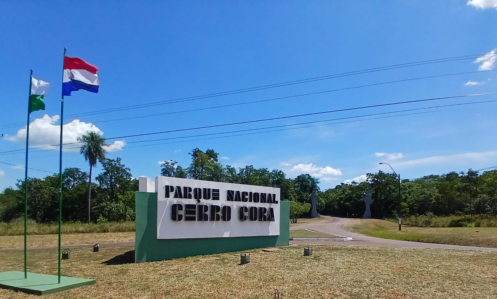
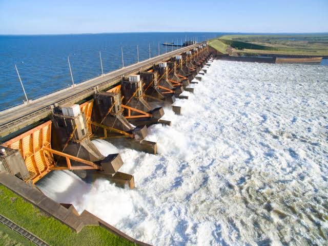
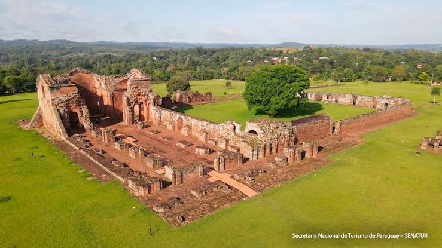
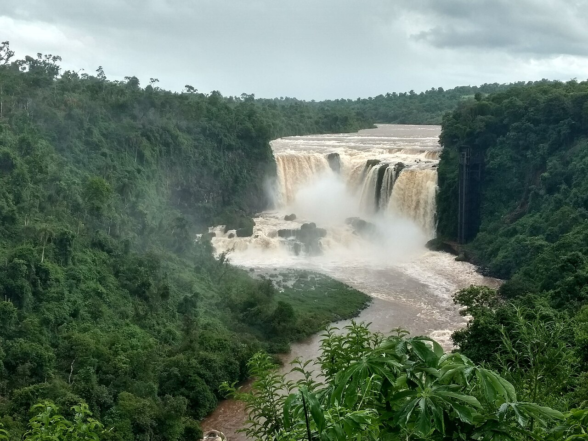
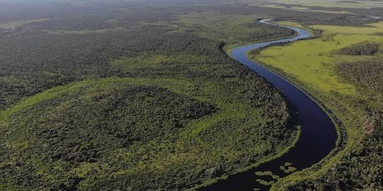

Bienvenidos a Paraguay
Paraguay es un país lleno de contrastes y riquezas naturales. Desde la majestuosidad del Parque Nacional Cerro Corá hasta la imponente Central Hidroeléctrica Yacyretá, pasando por la calidez de su gente y una gastronomía única. Te invitamos a explorar cada rincón de este destino fascinante.
“Paraguay te espera con los brazos abiertos para una experiencia inolvidable.”
Destinos Imperdibles
| Destino | Imagen | Descripción | Ubicación |
|---|---|---|---|
| Parque Nacional Cerro Corá |  |
Considerado uno de los espacios naturales más valiosos del país. Con más de 12.000 hectáreas, es un sitio histórico y de belleza exuberante. Ideal para el ecoturismo y la aventura. | Ver en Google Maps |
| Central Hidroeléctrica Yacyretá |  |
Ubicada sobre el río Paraná, es uno de los principales atractivos turísticos de la región. Ofrece visitas guiadas para conocer su imponente infraestructura y el Museo Histórico Ambiental. | Ver en Google Maps |
| Misiones Jesuíticas |  |
Declaradas Patrimonio de la Humanidad por la UNESCO. Las reducciones jesuíticas, como la de Santísima Trinidad, son un testimonio vivo de la historia y la cultura guaraní. | Ver en Google Maps |
| Salto del Monday |  |
Una impresionante caída de agua de 40 metros de altura y 120 metros de ancho, ubicada en la Triple Frontera. Un espectáculo natural imperdible para los amantes de la fotografía. | Ver en Google Maps |
| Pantanal Paraguayo |  |
Un paraíso para el avistamiento de aves y fauna silvestre. Sus humedales ofrecen una experiencia única de conexión con la naturaleza en su estado más puro. | Ver en Google Maps |